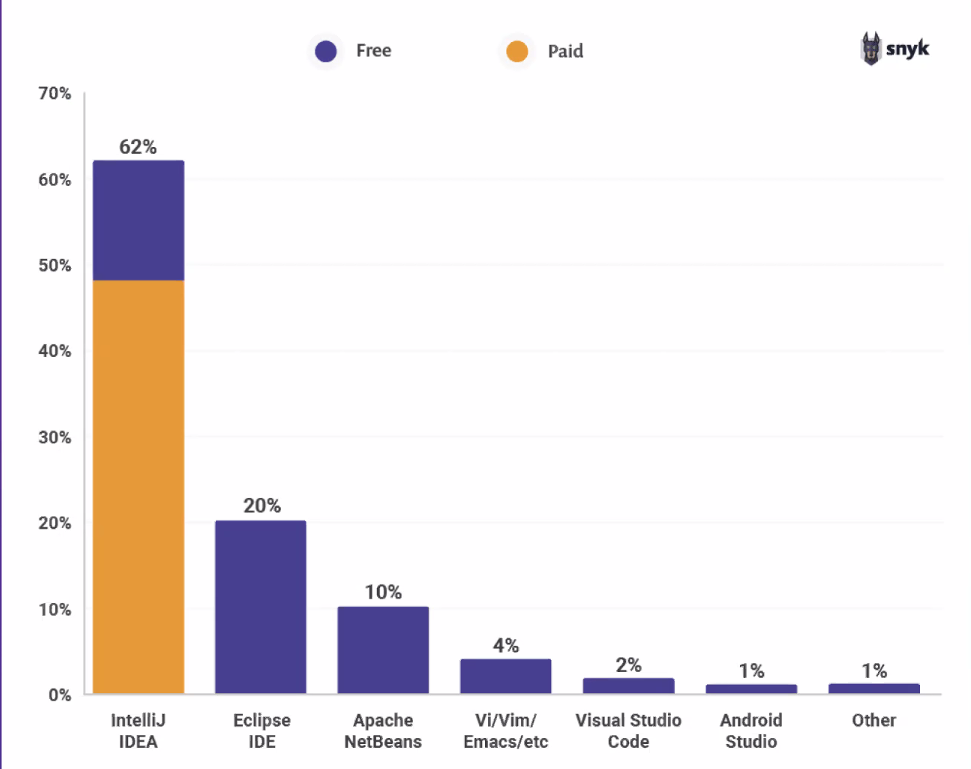
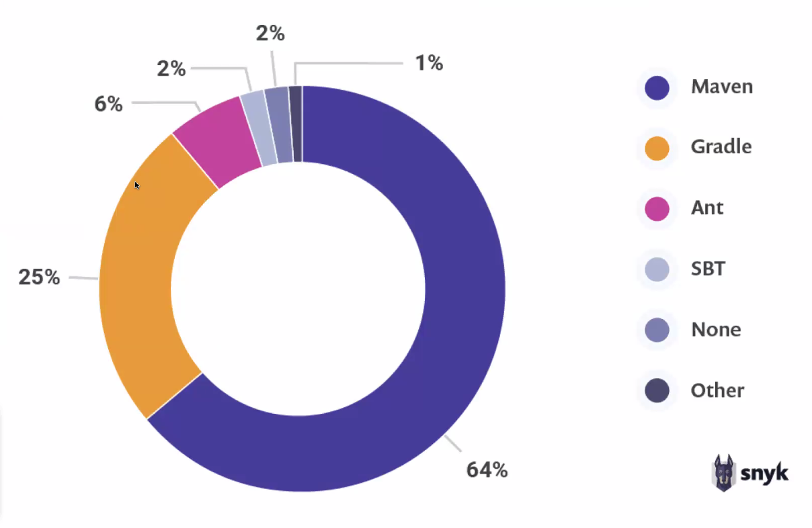
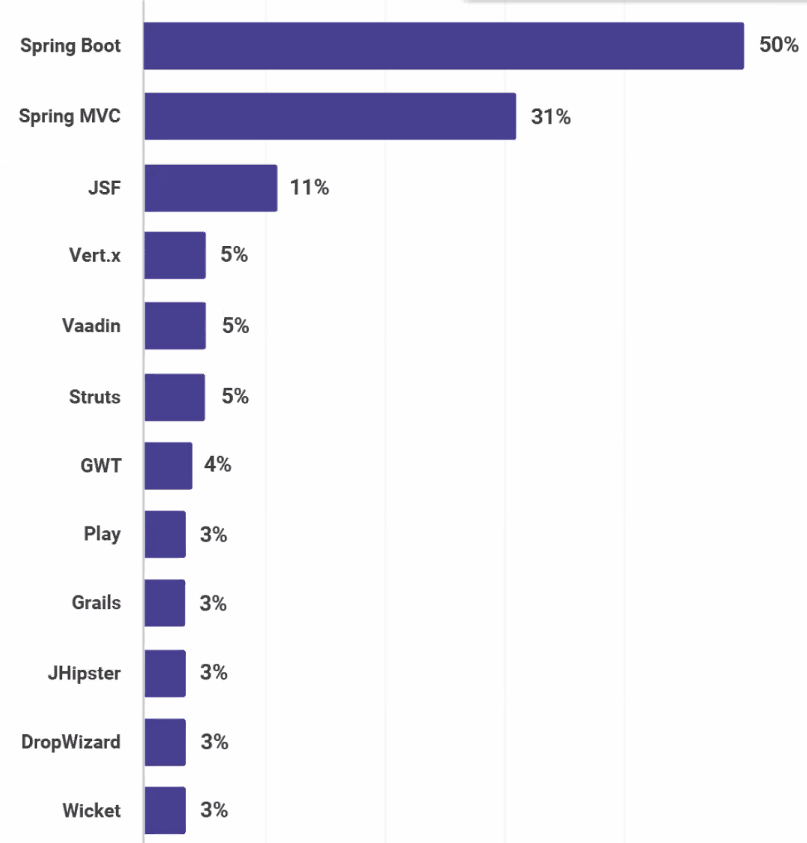

Gastcollege
Het Java landschap
Wie ben ik?
- Nick Stuivenberg
- Software Engineer
- Java
- Hoofddocent NOVI Hogeschool
- Bordspellen
- Klassieke oudheid
Inhoud
- Java
- JVM & Java ecosysteem
- De werkvloer (Agile/scrum)
- De cloud & containerization
- Toekomst
- De ontwikkelaar
Java
Wat is Java?
- Een objectgeoriënteerde programmeertaal
- Write once, run everywhere
- Ontwikkeld door James Goslin (Sun Microsystems)
- Doorontwikkeld door Oracle
Voorbeeld - Een klasse
Java versies
- Java 6 & 7
- Java 8
- Java 9, 10
- Java 11
- Java 12, 13, 14, ,15, 16
- Java 17
Java versies
- Java 6 & 7 - Legacy
- Java 8
- Java 9, 10
- Java 11
- Java 12, 13, 14, ,15, 16
- Java 17
Java versies
- Java 6 & 7 - Oude troep
- Java 8 - Meest gebruikte, maar EOL
- Java 9, 10
- Java 11
- Java 12, 13, 14, ,15, 16
- Java 17
Java versies - Nieuwe weg
- Java 6 & 7 - Oude troep
- Java 8 - Meest gebruikte
- Java 9, 10
- Java 11 - LTS
- Java 12, 13, 14, 15, 16
- Java 17
Java versies - Volgende LTS
- Java 6 & 7 - Oude troep
- Java 8 - Meest gebruikte, maar EOL
- Java 9, 10
- Java 11 - LTS
- Java 12, 13, 14, 15, 16
- Java 17 - LTS (Sept 2021)
Java versies - 2022
- Java 6 & 7 - Oude troep
- Java 8 - EOL. Gebruik zakt onder de 50%
- Java 9, 10
- Java 11 - LTS & nieuwe standaard
- Java 12, 13, 14, 15, 16
- Java 17 - LTS (Sept 2021)
Waarom Java?
Let op. Vooral mijn mening!
Java is goed in een paar belangrijke dingen:
- Multi-threaded
- Goed te leren en goede basis
- In vergelijking met C & C++ makkelijk te leren.
- Wat striktere taal dan bijv. Python
- Java is al heel lang volwassen. Hoop materiaal. Ingeburgerd.
Waarom Java?
Dit zorgt ervoor dat er veel Java-ontwikkelaars zijn. Deze zijn goedkoper dan C of C++ ontwikkelaars. Daarnaast kun je met Java relatief snel prototypen en je demo aan de man brengen. Dit kan, omdat Java goed is in veel dingen, maar nergens de beste in. Optimalisatie komt bijvoorbeeld dus later.
Java Eco-systeem
Java is meer dan alleen een programmeertaal. Het bestaat uit:
- Java Virtual Machine
- IDE
- Tools
- Frameworks & libraries
Java Virtual Machine
Na het schrijven van de Java-code is deze niet direct overal uitvoerbaar.
- De code moet gecompileerd worden naar Java-bytecode
- Iets moet deze bytecode kunnen uitvoeren.
- Dat is de Java Virtual Machine
- JVM emuleert een computer systeem en geeft instructies aan de hardware
Java Virtual Machine
Niet alleen Java-code kan gecompileerd worden, maar ook:
- Kotlin - Android development
- Scala - combineert OOP met Functioneel programmeren.
- Groovy - Lijkt meer op Python syntax
- Clojure - Lijkt op LISP. Functioneel programmeren.
Tools
- Ontwikkeltool (IDE)
- Build en dependency Management - Tool
- Versiebeheer
- Deploy-tool
Integrated Development Environment
Build en dependency manager
Versiebeheer
- Git
- SVN
Versiebeheer

Deploy tool


Libaries en Frameworks
Libraries en Frameworks
 JPA
JPA


Java backend frameworks
Vragen?
- Hoe belangrijk is Spring Boot voor een Java developer?
- Hoe kan je toch een senior java developer zijn maar geen ervaring hebben met Spring Boot?
Scrum is een agile methode

Stand-up, Backlog refinement, Sprint planning, Sprint Review, Retrospective (als team)
De cloud
De cloud staat voor een netwerk dat met al de computers die erop aangesloten zijn een soort 'wolk van computers' vormt, waarbij de eindgebruiker niet weet op hoeveel of welke computer(s) de software draait of waar die computers precies staan.
De cloud - spelers
Drie grote spelers


Cloud en docker
In de cloud heb je dus een stukje server tot je beschikking waar je jouw applicatie + afhankelijkheden op kunt installeren.
Zou het niet fijn zijn om dat als één pakketje te kunnen doen?
Cloud en docker

Docker - voordelen
- De applicatie zal op elke Linux machine draaien
- De applicatie zal op elke Linux machine draaien
- De applicatie zal op elke Linux machine draaien
- Docker is sneller en kleiner dan een gehele virtual machine
Java - de toekomst
Java blijft nog wel even bestaan, maar in het landschap verwachten we de volgende focussen
- Cloud technologie: Micronaut en Quarkus naast Spring-boot
- Reactive Programming
- Meer focus op security
De java ontwikkelaar
Waar moet die aan voldoen?